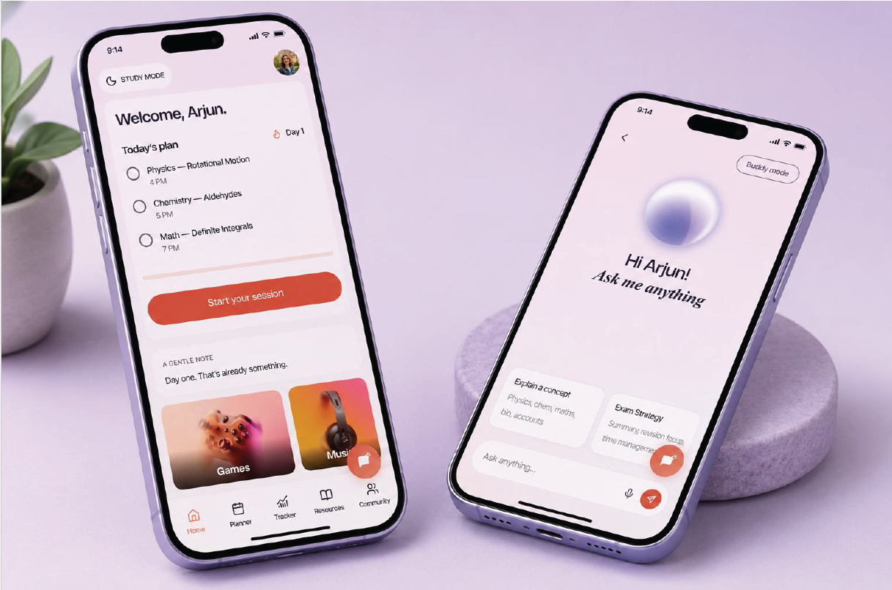
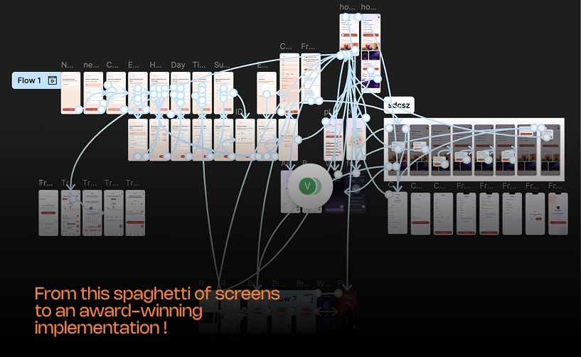

Primary research
Students and parentsWhat they shared shaped where we focused.
EdTech · Research + Product Design
A study companion for exam pressure, shaped around how students actually study.
Over eight weeks, I led UX with our 10-person team—from student and parent research to an interactive prototype we tested together.
Explore the case study
My role
Lead UX
Team
10 people
Timeline
8 weeks
What we made
Research · UX · Prototype · Testing
01 · Research
We spoke with students and parents, reviewed existing research, and looked at study and wellbeing tools. It brought our focus to younger exam aspirants—and to the pressure that can build when they feel alone or fall behind.

Primary research
Students and parentsWhat they shared shaped where we focused.
Secondary research
Study and support toolsWe looked at what existing products made easy—and what they missed.
What stayed with us
02 · Synthesis & ideation
A student we designed for
Archana
17-year-old NEET aspirant
Archana brings together patterns we heard: a disciplined student looking for private, practical support—not another pep talk.
What could help
A way to reset and return to studying without guilt.
The moment we designed around
Pressure builds. Support helps her return.
We grouped ideas around How Might We questions and chose to bring everyday study tools and emotional support into the same experience.
What we took forward
03 · Visual direction
We called the visual direction Glass Sanctuary: soft gradients, frosted cards, rounded shapes, and coral actions to make a high-pressure product feel gentler.
#FF8870#2A1F3A#F8D8CB#E8E3F2Product type
Nohemi for display · Satoshi for utility
Brand mark
The Floating Dot: a small pause above the pressure.
If the document does not appear here, open the Headroom visual design PDF.
04 · Prototype & test
We connected five flows in Figma, then built an HTML prototype to try Ask AI and Buddy conversations. We refined the AI prompts over seven rounds.

Maze usability study · 6 tasks
10 participants completed six tasks; we also recorded 5–6 mid-test drop-offs.
These are prototype task results, not long-term outcomes. Onboarding received an ease rating of 3.5/5.
What we fixed after testing
05 · What we learned
My biggest takeaway: test assumptions early, then decide what to change with the team—not from guesswork.
Explore the source work